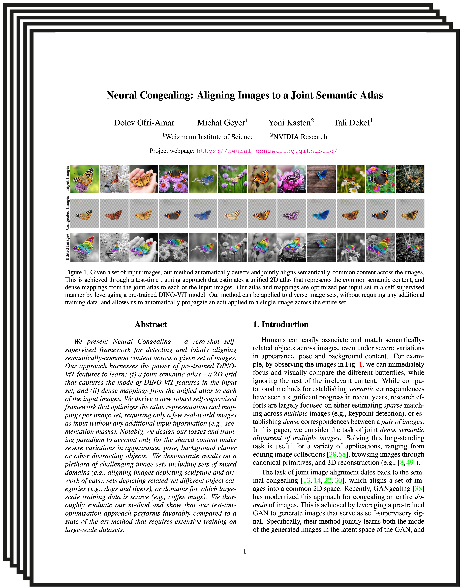
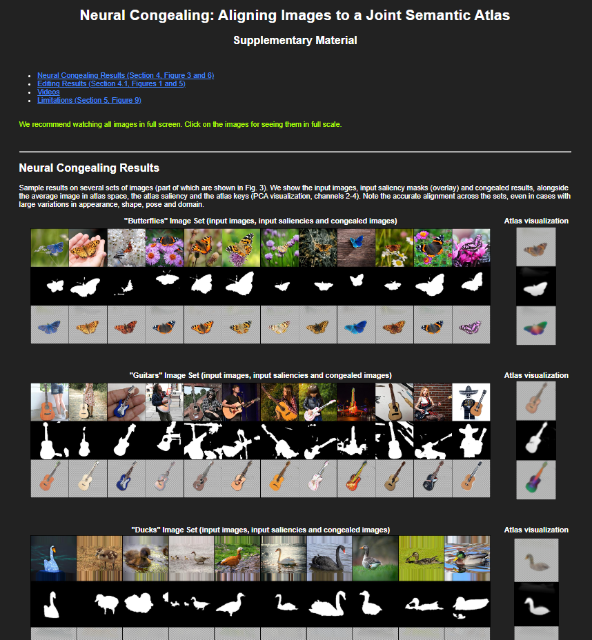

Abstract
We present Neural Congealing -- a zero-shot self-supervised framework for detecting and jointly aligning semantically-common content across a given set of images. Our approach harnesses the power of pre-trained DINO-ViT features to learn: (i) a joint semantic atlas -- a 2D grid that captures the mode of DINO-ViT features in the input set, and (ii) dense mappings from the unified atlas to each of the input images. We derive a new robust self-supervised framework that optimizes the atlas representation and mappings per image set, requiring only a few real-world images as input without any additional input information (e.g., segmentation masks). Notably, we design our losses and training paradigm to account only for the shared content under severe variations in appearance, pose, background clutter or other distracting objects. We demonstrate results on a plethora of challenging image sets including sets of mixed domains (e.g., aligning images depicting sculpture and artwork of cats), sets depicting related yet different object categories (e.g., dogs and tigers), or domains for which large-scale training data is scarce (e.g., coffee mugs). We thoroughly evaluate our method and show that our test-time optimization approach performs favorably compared to a state-of-the-art method that requires extensive training on large-scale datasets.
Neural Congealing
Given an input image set and a pre-trained (and fixed) DINO-ViT model, we extract for each image its keys features and an initial per-image saliency mask which is estimated by applying a clustering-based method directly to the extracted features (see Amir et al.). These masks may be very coarse and contain many irrelevant objects from the background. Our method is able to locate the common object and ignore the cluttered background.
The results show the input image set, the initial saliency masks and the final congealed images (click on an image for full scale).
See atlas visualizations in the supplementary page.
Editing
Once we have the atlas representation, we can use the average image of all congealed images as a template for editing (right). Then, the edit in the atlas space is automatically propagated back to all original images.
More editing results in the supplementary page!
Videos
Training on representative frames allows us to obtain transformations for all frames in inference, apply an edit in atlas space and map it back to all video frames.
|
Original video and edited video |
Average image |

|
|

|
|
|
Edit for dog taken from here. |

|
Paper
|  |
Neural Congealing: Aligning Images to a Joint Semantic Atlas |
Supplementary Material
|  |
Code
|
[code] |
Bibtex